OK. Let’s have a go at some MAJestic stuff. How about that?
One of the biggest misconceptions that (typical) people have is that life, anywhere in the universe, must have the identical conditions that exist for “our” earth. The argument is that a G0 to G3 star (much like our own) is needed, and that the target planet must lie within the “habitable zone” around that star.
- Must be a star like our sun.
- Must be a planet like our Earth.
- Must have a moon, like our moon.
- Must have water, much like our Earth does.
- Must be in the “habitable zone”.
There are all sorts of other criteria that folk use as well. But, you know what?
It’s all specious.
It’s lazy. It uses Newtonian scientific method to come to conclusions when we admittedly don’t have enough information to come to any conclusions in the first place.
As such… well, it’s all pretty much wrong.
Life forms all over the place in all sorts of environments. This varies from tiny microscopic organisms to large and complex entities and everything in between.
Now…
For the most part, when we (as humans) talk about life we imagine something similar to what we see on the Earth around us. This being a “people” with intelligence and tool-making ability, surrounded by other creatures that are either farmed or share the environment with us.
You know what I am talking about.
Well, dolphins live a rich full life, have society and speak a language. They do not use tools but are actually quite advanced, and in a number of ways have surpassed the human species.
Creatures do not need to be identical to humans to be intelligent. And that is the first lesson you all must learn here.
The ideas that people have about life elsewhere are all wrong. And here, I would like to take a moment to address this subject.
Life forms easily
Yup. It forms under the harshest conditions. Maybe it won’t look like me or you, or the zebra down the street, but it is life. And that is all that matters.
Right now the level of science education in schools are stuck in a 1970’s level, and while there might be some contemporaneous additions (as well as a very healthy dose of political correctness, and social re-engineering), for the most part, the fundamental scientific advances are ignored or treated as extraordinary. They are not treated as a fundamental insight into the way the universe actually is and how it works.
Ah, but they should.
Don’t you know…
Over the last decades, scientists have been intrigued by the fascinating organisms that inhabit extreme environments. Such organisms are known as extremophiles.
Extreme – O – Phile
They thrive in habitats which for other terrestrial life-forms are intolerably hostile or even lethal. They thrive in extreme hot niches, ice, and salt solutions, as well as acid and alkaline conditions; some may grow in toxic waste, organic solvents, heavy metals, or in several other habitats that were previously considered inhospitable for life.
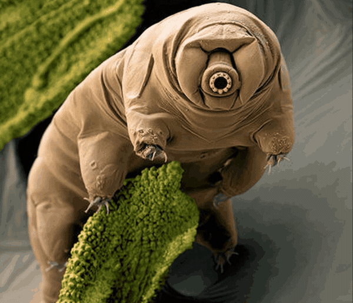
Extremophiles have been found depths of 6.7 km inside the Earth’s crust. They have been found more than 10 km deep inside the ocean. And at pressures of up to 110 MPa. They have been found in environments ranging from extreme acid (pH 0) to extreme basic conditions (pH 12.8). They have been found inside hydrothermal vents at 122 °C to frozen sea water, at −20 °C.
For every extreme environmental condition investigated, a variety of organisms have shown that they not only can tolerate these conditions, but that they also often require those conditions for survival.
And before your mind starts cranking out thoughts that maybe they came into being in a “normal” Earth environment and then adapted to the harsh environment, face the facts. They evolved naturally within the singular harsh environments that we discovered them in.
They are classified according to the conditions in which they grow:
- Thermophiles – Organisms that grow at high temperatures.
- Hyperthermophiles – Organisms that grow at very very high temperatures.
- Psychrophiles – Organisms that grow best at low temperatures.
- Acidophiles- Organisms adapted to acidic pH values.
- Alkaliphiles – Organisms optimally adapted basic pH values.
- Barophiles – Organisms that grow best under pressure.
- Halophiles – Organisms that require NaCl for growth.
In addition, these organisms are normally polyextremophiles, being adapted to live in habitats where various physicochemical parameters reach extreme values.
Poly – extreme – O – phile
For example, many hot springs are acid or alkaline at the same time, and usually rich in metal content; the deep ocean is generally cold, oligotrophic (very low nutrient content), and exposed to high pressure; and several hypersaline lakes are very alkaline.
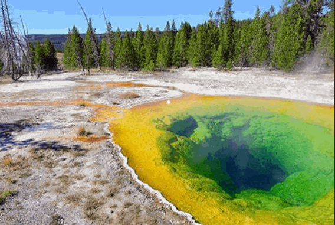
An entire world of extreme organisms opens up to the possibility and the reality that life can evolve just about anywhere, and under a combination of the most extreme conditions.
Scientific research types like to classify things and put them into nice neat boxes. They give them names and they spend a considerable amount of time developing methodology used to classify they shape, behaviors and survival considerations.
Are you ready for a memorization test? Imagine trying to study all the various names and classifications that we have created to classify these creatures and the environments that they live within.
For instance, extremophiles may be divided into two broad categories.
- Extremophilic organisms which require one or more extreme conditions in order to grow.
- Extremotolerant organisms which can tolerate extreme values of one or more physicochemical parameters though growing optimally at “normal” conditions.
Extremophiles include members of all three domains of life, i.e., bacteria, archaea, and eukarya. Most extremophiles are microorganisms (and a high proportion of these are archaea), but this group also includes eukaryotes such as protists (e.g., algae, fungi and protozoa) and multicellular organisms.
I know that this is all very interesting, and I do tend to get a bit carried away… but let’s concentrate on the most important aspect of this knowledge.
Life forms all over the place, and under the most extreme environments.

As long as there is some kind of heat source, and some kind of environment to live in, life will anchor itself and propagate.
But we don’t care about tiny insignificant bacteria, right?
Most people, fed a steady diet of science fiction movies, could care less about bacteria and other critters that you need a microscope to see.
We want to find pristine uninhabited lands that we can seize and make our own. We want to find other species, much like us, who can teach us the “secrets of the universe”, and we want to discover what their homes, their societies and behaviors are like.
Well…
While the universe if filled with all matter or creatures, from aquatic beings to spiritual beings, to other creatures what are difficult to classify, we are going to concentrate on the image on what people imagine “extraterrestrial aliens” look like and the worlds that they come from.
For this archetype, we will consider images from Hollywood Movies and television. Perhaps maybe, something along these lines…
What we care about is people that we can walk with, talk with, and interact with in a level of comfort so as not to be repelled or disgusted.
Now, with that in mind, let’s look at the kinds of worlds where these creatures might come from.
So right off the bat, we need to make something perfectly clear…
It’s not the type of star that matters, it’s the age of the star.
In other posts, that I have written, I strongly suggested that the most common stars for [1] naturally evolving [2] native [3] intelligent [4] ambulatory life are the cooler stars. Not the bright stars that populate our night sky.
This is the K, M stars and the various brown dwarfs L, T and Y.
Our sun is a G class, and it is on the outer edge of the (native) habitable range. It is not the middle-range by which a species could evolve within. I would argue that cooler stars are more appropriate for natural sentence evolution crucibles.
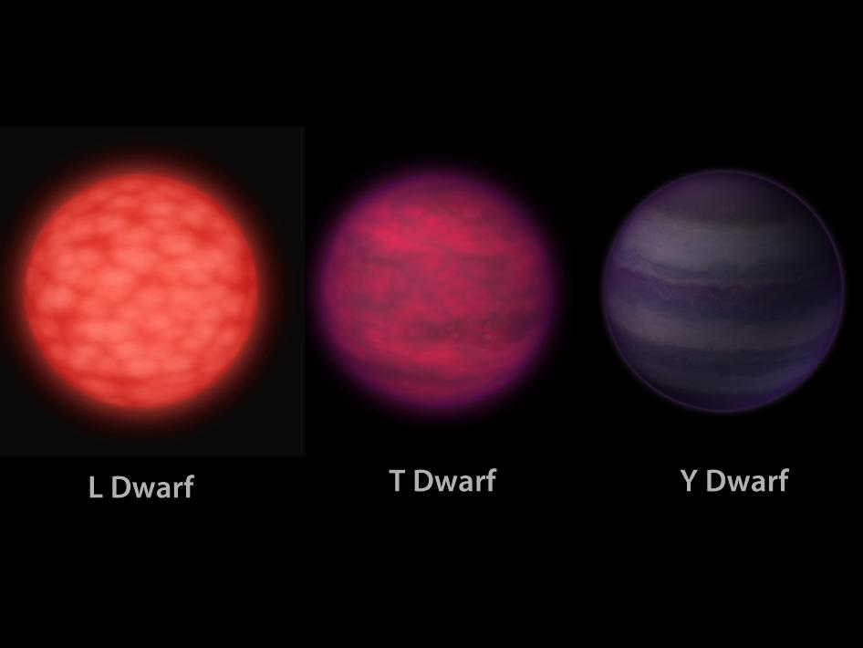
Most of the stars in the universe are the smaller and cooler stars. Not those hot, bright and young stars that we see in the night sky. Most of the stars that have naturally evolving intelligent life are too dim and too far away for us to see with our naked eyes. We need electronic equipment to peer into the distant heavens to see where they are.
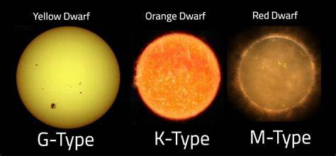
The hotter stars than this (the O, B, A, and F) all tend not to have any naturally developed life.
They can have colonies. They can have settlements. But the development of naturally evolved native intelligent life is rather slim (but NOT impossible). You see, life takes time to develop. And these bright, fierce and fiery stars are just too short lived.
That being said, you know it’s not really due to the heat and radiation of the star as much as it is due to the age of the star.
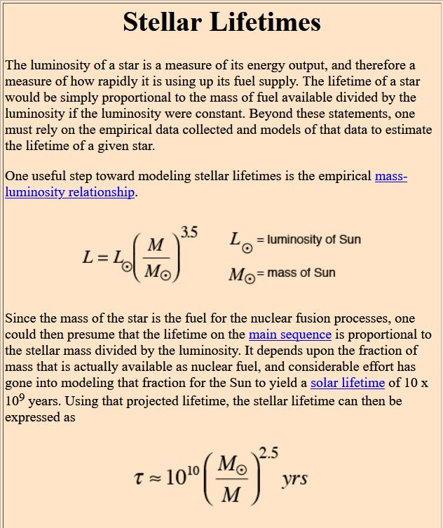
Most native intelligent life needs a star with a minimum of two billion years in age, with three billion years to be the universe norm. Our earth is four billion years old, so that should be able to give you all an idea of what we are talking about here.
Thus, the very hot burning and short lived O, B and A stars are far too young to develop any kind of life that we would be interested in. That also includes F stars, but they are a very special case with all kinds of exceptions involved.
And while I am at it…
An important consideration is planetary influences.
Stop looking for an Earth-like planet to nurture and generate the evolution of human-similar intelligent life.
Size isn’t nearly as important as tidal forces.
Our own planet, earth, was pretty much a barren world with only life in the oceans for billions of years. It wasn’t until the moon moved in orbit around the world, that tides came into play, and the movement of life onto the land began.
- Cambrian Explosion: Life Diversification in the Oceans …
- Cambrian Period & Cambrian Explosion: Facts & Information …
- The Cambrian Period: An Explosion of Life
- Ancient Fossils Suggest Complex Life Evolved on Land …
- Timeline: The evolution of life | New Scientist
But, ya, the good news is…
Tidal forces from close proximity stars or planets will generate the necessary atmospheric and water movements that are conducive to evolutionary growth. The strong gravitational forces of a nearby star, or huge planet will cause movements in the various gas and liquid atmosphere. We call these things “tides”, and the ebb and flow of them generates evolutionary changes.
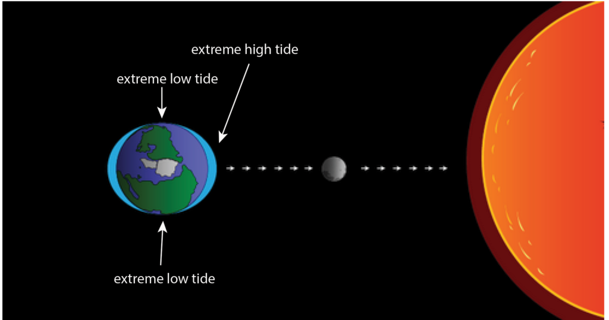
And that means planet size as well…
The point that I want to make is that the size of a “rocky planet” will have an influence, but other factors will mitigate that influence somewhat.
- Small planets (like Mars, perhaps) would be able to develop life provided that the atmospheric conditions are stable.
- Large planets (like “super earths”) can also develop human-like life. It depends on the gravitational pull of the planet due to the nature of the rocky interior. A low-metal planet can be awfully big and still have the same gravity as the earth, don’t you know.
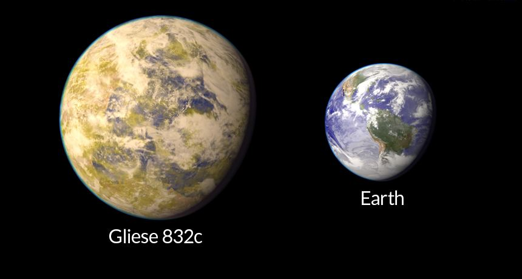
With those “pointers” out of the way, let’s talk about something that I would really like to emphasize right now.
Gas Giants that exist within habitable zones.
A [1] gas giant that is [2] within the habitable zone of a star that is [3] at least three billion years old and [4] can possess planets larger than the size of Mars that would have all the necessary criteria to develop native, ambulatory intelligent life.
Phew!
The authors also address the idea of habitable exomoons rather than exoplanets. It’s conceivable that in other solar systems, moons might be more likely to be habitable than planets. In that case, other factors come into play, like tidal forces. That could be especially true around M-type stars, or red dwarfs. That’s because the circumstellar habitable zone around these low energy stars is already much closer to the star than around a G-type star like our Sun. The combined gravitational forces of the exomoon, its planet, and the star might eliminate habitability altogether. -Universe Today
You know, cool stars have a “frost line” (soot line) close to the star. This means that gas giants (like Jupiter and Neptune) can retain their gasses and not evaporate away to become a rocky planet. They can keep on being what we see them as, and they can have moons that behave as singular planets.
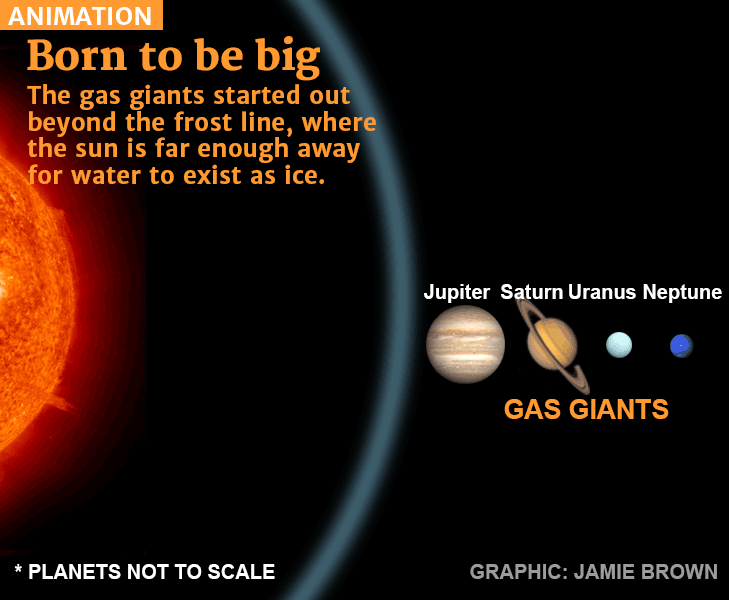
And with that understood, we can best look at recent planetary discoveries in a new light. Indeed, as of 2018, UCR researchers have identified 121 giant planets that may have habitable moons within the habitable zones of the parent star..
From the 1950s, when astronomers talked about finding other, habitable worlds, they focused entirely on planets like Earth. In a 1993 paper in Icarus, geoscientist James Kasting of Penn State University laid the basis for the most popular definition of “habitable zone” in use today: It’s the “Goldilocks” region where temperatures would be not too hot or too cold for liquid water. But that criterion doesn’t apply to all planets within a habitable zone: Kasting’s model works only for a rocky planet with an Earthlike atmosphere, made up of carbon dioxide, water and nitrogen. “Any type of planet can orbit in the habitable zone,” but only such Earthlike planets are likely to have liquid water on their surfaces, says astrophysicist Elizabeth Tasker of the Japan Aerospace Exploration Agency. “We all secretly know this, as both the moon and Mars orbit within the habitable zone, but neither have lakeside retreats.” ... Knowing a planet’s density also isn’t enough to tell if it has an Earthlike surface. Venus, after all, is nearly the same size and mass as Earth, and sits just a bit nearer to the sun than the habitable zone. But Venus’ atmospheric chemistry sizzles its surface at lead-melting temperatures (SN: 2/13/18). “Venus is a warning to us that size isn’t everything,” says Stephen Kane, a planetary astrophysicist at the University of California, Riverside. “That planet is screaming at us that planetary habitability is complicated.” - Why just being in the habitable zone doesn’t make exoplanets livable
In a paper published Wednesday (June 13, 2018) in The Astrophysical Journal, researchers at the University of California, Riverside and the University of Southern Queensland have identified more than 100 giant planets that potentially host moons capable of supporting life.
Since the 2009 launch of NASA’s Kepler telescope, scientists have identified thousands of planets outside our solar system, which are called exoplanets. Keep in mind that the primary goal of the Kepler mission is to identify planets that are in the habitable zones of their stars.
The idea behind this is that terrestrial (rocky) planets are prime targets in the quest to find life because some of them might be geologically and atmospherically similar to Earth.
But to many, the results were disappointing. Instead of finding tons of earth analogs, they discovered that many solar systems instead had gas giants (like Jupiter and Saturn) in the habitable zones.
This is actually a good thing.
So instead of looking for earth analogs, another place to consider is the many gas giants identified during the Kepler mission. While not a candidate for life themselves, Jupiter-like planets in the habitable zone may harbor rocky moons, called exomoons, that could sustain life.
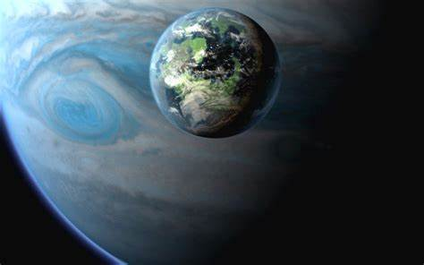
“There are currently 175 known moons orbiting the eight planets in our solar system. While most of these moons orbit Saturn and Jupiter, which are outside the Sun’s habitable zone, that may not be the case in other solar systems,” - Stephen Kane, an associate professor of planetary astrophysics and a member of the UCR’s Alternative Earths Astrobiology Center.
The researchers identified 121 giant planets that have orbits within the habitable zones of their stars. At more than three times the radii of the Earth, these gaseous planets are less common than terrestrial planets, but each is expected to host several large moons.
Scientists have speculated that exomoons might provide a favorable environment for life, perhaps even better than Earth. This is because they receive energy not only from their star, but also from radiation reflected from their planet.
The size of the moon will play a role.
The researchers have identified 121 gas giants within the Goldilocks zones of their respective stars. If they’re anything like the gas giants in our Solar System, each is expected to be orbited by several large moons of its own.
And the scientists believe these moons would be an excellent place to look for life, since they’d receive radiation not just from the Sun, but the radiation belts of their host planets’ magnetospheres.
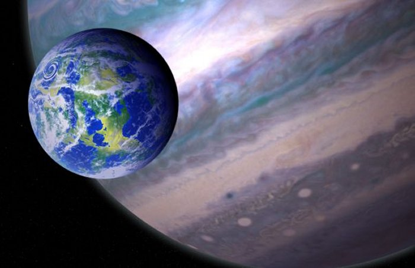
As an earlier study has pointed out, such moons might have to be at least as big as Mars for their gravity to be able to retain their water.
This implies that gas giants will need to be rather larger to collect “large moons” able to hold an atmosphere.
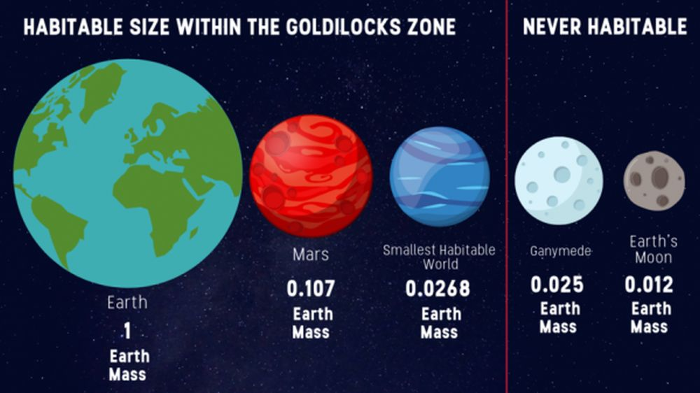
Planet Sizes Matter for Habitability Too. In order to be considered habitable, a planet needs to have liquid water. Cells, the smallest unit of life, need water to carry out their functions. For liquid water to exist, the temperature of the planet needs to be right. But how about the size of the planet? Without sufficient mass a planet won’t have enough gravity to hold onto its water. A new study tries to understand how size affects the ability of a planet to hold onto its water, and as a result, its habitability. The issue of what might make a planet habitable is an ongoing debate. Not only for exoplanets, but for some of the moons in our own Solar System’s future. Scientists have a pretty good idea how much energy a planet needs to receive from its star to maintain liquid water. That’s given rise to the popular notion of the “Goldilocks Zone,” or the circumstellar habitable zone, a range of proximity that’s neither too close nor too far from a star for liquid water to persist on a planet. With the search for exoplanets in habitable zones ramping up, and as we get better telescopes and techniques to study exoplanets in greater detail, scientists need more constraints on what planets to spend observing resources on. As this paper shows, a planet’s mass could be a useful filter. The new paper is titled “Atmospheric Evolution on Low-gravity Waterworlds.” It’s published in The Astrophysical Journal. The lead author is Constantin W. Arnscheidt, a Grad Student at MIT. To maintain liquid water on its surface, and an atmosphere, an exoplanet or an exomoon has to have enough mass, otherwise that water and atmosphere will simply drift off into space. And it has to hold onto its water long enough for life to appear. Astronomers use a ballpark figure of a billion years for that to happen. ... That critical size, according to Arnscheidt and the other authors of the study, is 2.7 percent the mass of Earth. They say that any smaller than that, and the planet simply won’t be able to hold onto its atmosphere and water long enough for life to appear. For context, the Moon is 1.2 percent of Earth’s mass, and Mercury is 5.53 percent. The researchers use comet-like planets as an example. Comets have lots of water, which is sublimated when they get near the Sun. But they lack the required mass to hold onto that vapor, and they can never form an atmosphere. The water is lost to space. So a planet that was too small, even if it had lots of water, would never hold onto it. -Universe Today
Thus, we must expect that gas giants under the size of say Uranus or Neptune might not be able to retain a moon of sufficient size to hold liquid water. While gas giants larger than Jupiter might be able to hold multiple moons that would be able to retain atmospheres, hold water, and have the necessary magnetospheres, and tidal forces to generate a find hospitable environment for native life to evolve.
Other considerations – Tidal extremes
“There are many processes that are negligible on Earth but can affect the habitability of planets orbiting M dwarfs. Two important ones are strong tidal effects and vigorous stellar activity,” -The author on the habitability study published in the journal Astrobiology. Luger R et al. 2015. Habitable Evaporated Cores: Transforming Mini-Neptunes into Super-Earths in the Habitable Zones of M Dwarfs. Astrobiology 15 (1): 57-88; doi: 10.1089/ast.2014.1215
As mentioned earlier, the tidal forces play an important role in natural evolution of intelligent life upon a planet. But like anything else, there is a range from with this is desirable and when it is not.
- Small to zero tidal forces will not be sufficient to advance the development of native life.
- Large tidal forces can hinder the development of life.
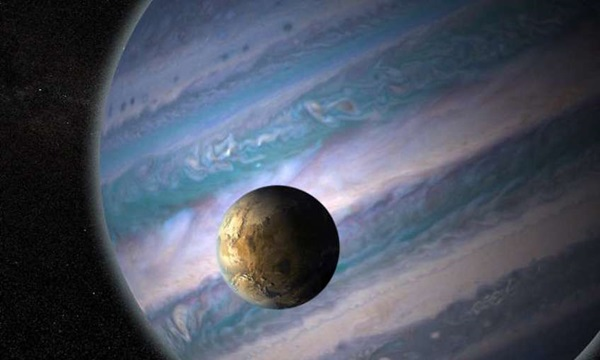
A tidal force is a star’s gravitational tug on an orbiting planet, and is stronger on the near side of the planet, facing the host star, than on the far side, since gravity weakens with distance. This pulling can stretch a planet into an ellipsoidal or egg-like shape as well as possibly causing it to migrate closer to its star.
“This is the reason we have ocean tides on Earth, as tidal forces from both the moon and the sun can tug on the oceans, creating a bulge that we experience as a high tide. Luckily, on Earth it’s really only the water in the oceans that gets distorted, and only by a few feet. But close-in planets, like those in the habitable zones of M dwarfs, experience much stronger tidal forces,” - The author on the habitability study published in the journal Astrobiology.Luger R et al. 2015. Habitable Evaporated Cores: Transforming Mini-Neptunes into Super-Earths in the Habitable Zones of M Dwarfs. Astrobiology 15 (1): 57-88; doi: 10.1089/ast.2014.1215
This stretching causes friction in a planet’s interior that gives off huge amounts of energy. This can drive surface volcanism and in some cases even heat the planet into a runaway greenhouse state, boiling away its oceans, and all chance of habitability.
Other Considerations – Stellar activity
Vigorous stellar activity also can destroy any chance for life on planets orbiting low-mass stars.
M dwarfs are very bright when young and emit lots of high-energy X-rays and UV radiation that can heat a planet’s upper atmosphere, spawning strong winds that can erode the atmosphere away entirely.
Many of the stars that are dim, red (class-M) dwarfs have a tendency to exhibit unusually violent flare activity. Since these flare stars seem to be so common, we need to take into account the estimated age of the M class star.
- Young M-class star – Unstable with flares.
- Old M-class star – Generally stable for billions of years.
Flares on these so-called flare stars occur sporadically, with successive flares spaced anywhere from an hour to a few days apart. It only takes a few minutes for a flare to reach peak brightness, and in fact more than one flare can occur at a time.
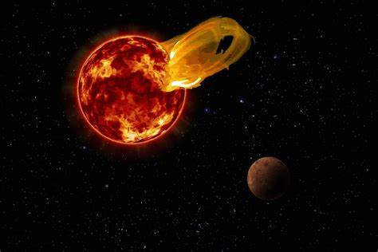
More importantly, flares on such dim dwarfs may emit up to 10 000 times as many X-rays as a comparably sized flare on our own sun.
As such, they would be lethal to any life forms otherwise developing on planets near the flare star, so life around such stars is unlikely.
During a deep survey of 215,000 red dwarf stars for planets called the Sagittarius Window Eclipsing Extrasolar Planet Search (SWEEPS) using NASA's Hubble Space Telescope, astronomers found some 100 stellar flares over just a week of observations. Constituting the largest continuous monitoring of red dwarf stars ever undertaken, the astronomers announced on January 10, 2011 that their survey results suggest that even "fairly old stars" which are several billion years old can flare violently. As such they can become as much as 10 percent brighter in a short time, with an average flare duration of 15 minutes. As a result of such flares, planets orbiting near enough to such stars to host Earth-type life within close-in liquid water (or "habitable") zone orbita can have their atmospheres heated, puffed up, and possibly "stripped away." Although red dwarf stars are smaller than our Sun, Sol, and other Sol-type stars, they have comparatively "deeper convection zones where cells of hot gas bubble to the surface " and powerful magnetic fields stronger than Sol's are generated that enable red dwarfs to erupt with energetic flares. Star spots on red dwarfs cover a much larger area than the Sun (e.g., half of their surface), while Sunspots typically cover less than one percent of the Sun's surface - Hubble news release; and Kowalski et al, 2011.
Some flare stars have also been observed emitting radio bursts simultaneously with the flares. Please note that since flare stars are variable stars, they will usually have a variable star designation such as UV Ceti or V645 Centauri.
A look at some candidates.
Within 10 pc of Sol, astronomers may have detected planets in the Solar System and at least 12 other M-class stars (as of 2014).
- Lalande 21185,
- Epsilon Eridani,
- Gliese 229,
- Gliese 876 / Ross 780,
- Kapteyn’s Star,
- CD-31 9113 / Gl 433,
- CD-44 11909 / Gl 682,
- CD-46 11540 / Gl 674,
- Gl 581 / HO Librae,
- Groombridge 34 A,
- AU Microscopii,
- BD-05 5715 / Gl 849).
Today, we are uncertain whether many red dwarfs are capable of hosting Earth-type planets in stable orbits within their respective habitable zones.
Yet, data clearly shows that planets exist withing those regions. The question then becomes, just what kind of environments exist within those planets?
Consider Solar System Kepler-62.
It has two planets, a little bigger than the earth within it’s Goldilocks zone.
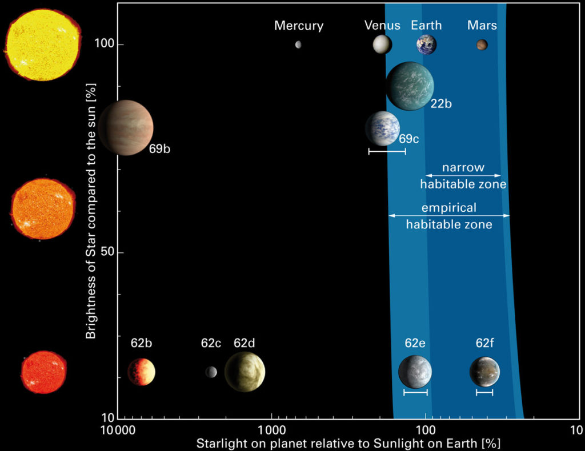
“These planets are unlike anything in our solar system. They have endless oceans. There may be life there, but could it be technology-based like ours? Life on these worlds would be under water with no easy access to metals, to electricity, or fire for metallurgy. Nonetheless, these worlds will still be beautiful blue planets circling an orange star — and maybe life’s inventiveness to get to a technology stage will surprise us.” - Lisa Kaltenegger of the Max Planck Institute for Astronomy and the Harvard Smithsonian Center for Astrophysics.
As the warmer of the two worlds, Kepler-62e would have a bit more clouds than Earth according to computer models. More distant Kepler-62f would need the greenhouse effect from plenty of carbon dioxide to warm it enough to host an ocean. Otherwise, it might become an ice-covered snowball.
“Kepler-62e probably has a very cloudy sky and is warm and humid all the way to the polar regions. Kepler-62f would be cooler, but still potentially life-friendly. The good news is — the two would exhibit distinctly different colors and make our search for signatures of life easier on such planets in the near future. “ - Harvard astronomer Dimitar Sasselov.
Well, is that true?
If a planet is in the habitable zone of a red dwarf, it would be very near to the star. The sky would be filled with this huge sun. And while there would be one side constantly facing the star, convection in the atmosphere would play a role as to keep the oceans wet and in liquid form.
Indeed, the atmosphere on a tidally locked planet around a cooler star might create very interesting atmospheric conditions.
Some believe that within a red dwarf’s habitable zones orbit, liquid water may not be possible. They argue that tidal locking would be problematic. However studies has shwon that this concern might not be as problematic as it appears on first glance. The atmosphere may not freeze out on the dark side as previously believed.
“The more data we get, the more signs we see pointing to the notion that potentially habitable and Earth-sized exoplanets are common around these kinds of stars. With red dwarf stars almost everywhere around our galaxy, and these small, potentially habitable and rocky planets around them too, the chance one of them isn’t too different than our Earth looks a bit brighter.” -Andrew Vanderburg (University of Texas at Austin)
Which brings us up to the idea that a planet-sized moon, in close orbit of a “protective” gas giant, that resides within the Goldilocks zone, could very well provide the conditions for safe natural evolution of native intelligent life.
This is because, all the negative points about a singular rocky planet around a cool star, are mitigated by the complex environment of a nearby gas giant.
Gas giant in a Goldilocks zone
Because the sky is full of surprises, we can’t afford to be too conservative about what tomorrow’s discovery might be.
What we do know is that using our studies as a guide, the presence of gas giants lying within the habitable zones of stars are indeed quite common…
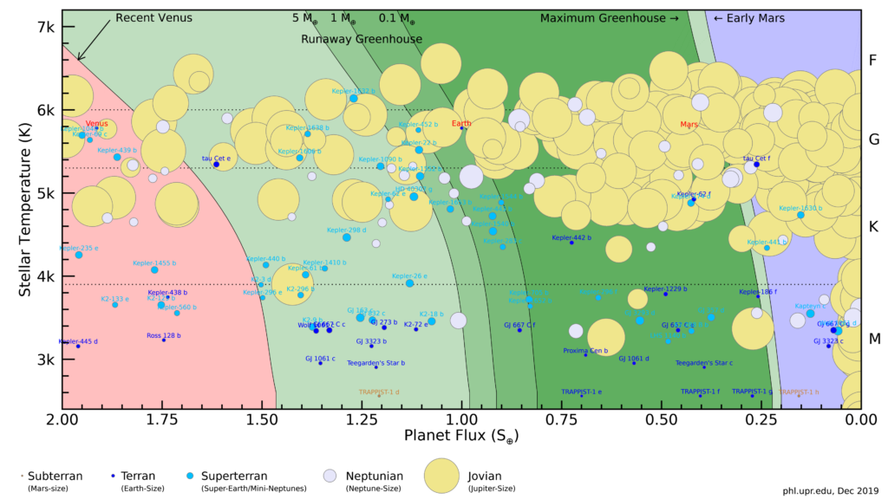
I don’t think we can rule out the idea of habitable moons around a gas giant in the habitable zone, but there are reasons to question how numerous they would be.
One problem is that moons around a gas giant will probably be made largely of ice and rock, because the planet itself would have formed beyond the snow line and migrated into the habitable zone. A Mars-sized moon is going to melt and, given its low escape velocity, will gradually lose its atmosphere in these warmer regions.
Because we know that this is what happened to Mars…
Mars lost its atmosphere because it is too small to have a magnetic field strong enough to protect against solar radiation.
Yet…
… it seems like icy exomoons that thawed out as their planet spiraled into the habitable zone would be protected by the host planet’s magnetic field and could have an atmosphere.
The protection of the gas giant would cause the moon to retain it’s atmosphere.
And this is what is so very exciting about all of this.
All the objections to earth-like planets around cold stars are eliminated by the pretense of a gas giant.
And thus we end up with this narrative, that habitable planets require a large gravitational body nearby in order to shepherd, protect and create the environments necessary for earth-like environments and intelligent evolution.
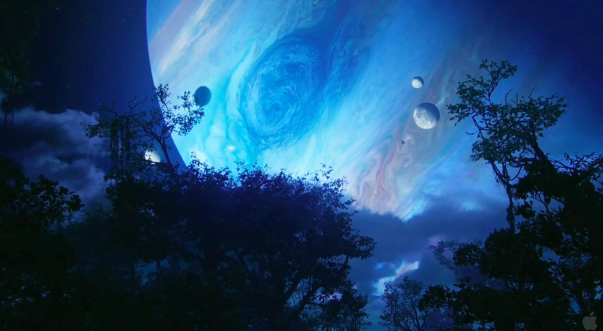
Now…
Instead of thinking that a planet MUST be like the earth; singular, alone with a moon and a G-class sun…
We must recognize that the most important criteria consists of the attributes that this environment creates, and not the specific situation itself…
- Age (at least three billion years old).
- A shepherding gas giant, large moon, or other protective body.
- A protective body to deflect or absorb meteors and asteroids.
- A large gravitational sink to produce tidal effects.
- A lower temperature star, that is not very active.
And if we accept this criteria, this environment, this crucible for the intelligent growth and protection of a given life-form…
… then we can realize and recognize just how special our planet is, and why we need to husband our resources and treasure what we have. We need to take care of, protect and nurture what we have. It is not an unlimited resource that we can mine for profit.
It is a special environment…
…That out of “chance” somehow, by some technique or fate or technology, was able to replicate the habitable regions most commonly found throughout the universe, right here.
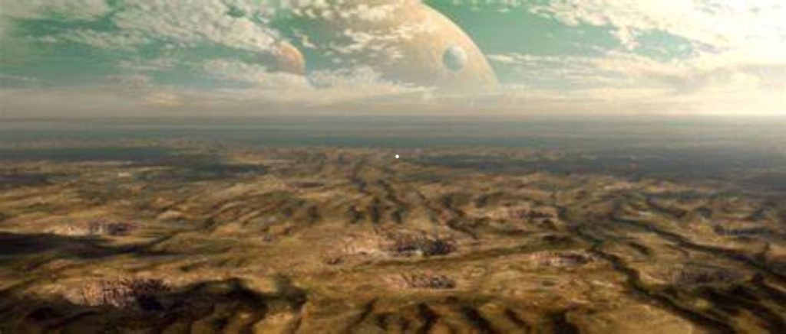
Because…
Well, our solar system is unique.
It’s uniqueness suggests one of two things.
- Intelligent life is very rare in the universe. Just as rare as a singular G class star (not a binary, trinary or other multi-star system) with a planet in the habitable zone with a large orbiting moon around it. (A common argument.)
- Intelligent life is common in the universe. But it forms in an environment that the G star / earth / moon appears to replicate.
Conclusion
MAJestic has been working with extraterrestrial life and their technologies for decades. Those of us within the organization fully realize that life is common in the universe, and that intelligent humanoid life is very, very common. We know… well, because we are using their technologies and working with them face-to-face directly.
It's pretty darn impossible to tell a man who is petting a dog on the street, that dogs do not exist. Don't you know.
With this knowledge, you can see where the conclusion of this article / post is heading…
Our solar system is unique and constructed intentionally to act as a crucible for intelligent humanoid life.
You can label the architects of this sentience nursery as God, Buddha, Mohammad, Guardian Angels, Mantids, the Progenitors or whomever you feel most comfortable with. But the fact remains that this solar system of ours appears to replicate what a “natural” crucible for intelligent life would appear as.
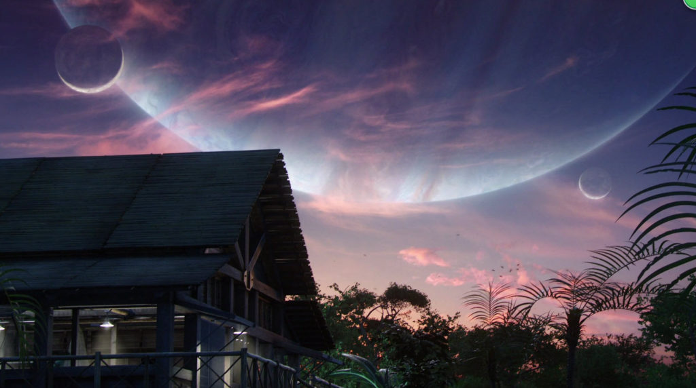
I do hope that you enjoyed this post. I have more in my MAJestic Index.
Articles & Links
You’ll not find any big banners or popups here talking about cookies and privacy notices. There are no ads on this site (aside from the hosting ads – a necessary evil). Functionally and fundamentally, I just don’t make money off of this blog. It is NOT monetized. Finally, I don’t track you because I just don’t care to.
To go to the MAIN Index;
- You can start reading the articles by going HERE.
- You can visit the Index Page HERE to explore by article subject.
- You can also ask the author some questions. You can go HERE .
- You can find out more about the author HERE.
- If you have concerns or complaints, you can go HERE.
- If you want to make a donation, you can go HERE.
Please kindly help me out in this effort. There is a lot of effort that goes into this disclosure. I could use all the financial support that anyone could provide. Thank you very much.
[wp_paypal_payment]